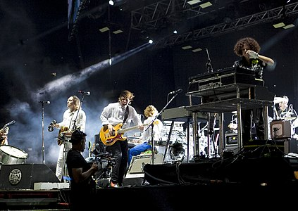

Arcade Fire is a Canadian indie rock band from Montréal, Quebec, consisting of husband and wife Win Butler and Régine Chassagne, alongside Richard Reed Parry, Tim Kingsbury and Jeremy Gara. The band's current touring line-up also includes former core member Sarah Neufeld and multi-instrumentalists Paul Beaubrun, Dan Boeckner and Eric Heigle. Each of the band's studio albums features contributions from composer and violinist Owen Pallett
Founded in 2001 by friends and classmates Butler and Josh Deu, the band came to prominence in 2004 with the release of their critically acclaimed debut album Funeral. Their second studio album, Neon Bible, won them the 2008 Meteor Music Award for Best International Album and the 2008 Juno Award for Alternative Album of the Year. Their third studio album, The Suburbs, was released in 2010 to critical acclaim and commercial success. It received many accolades, including the 2011 Grammy for Album of the Year, the 2011 Juno Award for Album of the Year and the 2011 Brit Award for Best International Album. In 2013, Arcade Fire released their fourth album, Reflektor, and scored the feature film Her, for which band members Will Butler and Owen Pallett were nominated in the Best Original Score category at the 86th Academy Awards. In 2017, the band released their fifth studio album Everything Now, which was succeeded by their sixth studio album We in 2022.